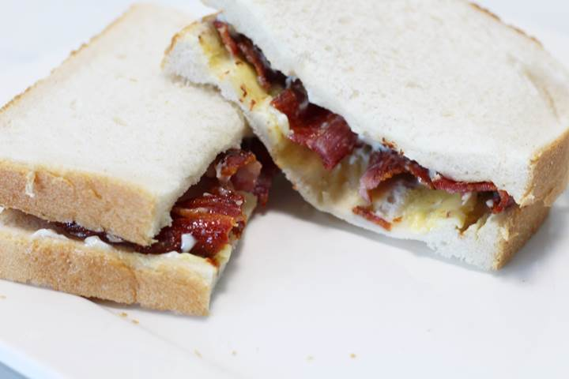

Crispy Bacon Sandwhich

Description
The perfect meal for a lazy Sunday morning, or for an upset tummy.
Ingredients
- Four full size rashers of thin cut bacon
- Lurpak butter
- Thick cut white bread
Steps
- Melt a generous tablespoon of butter on high heat. Wait until it is
fully melted (but well before it browns).
- (You may want to put your tub of butter back into the
fridge at this point - it is important it is not half melted by
the time you butter your sandwhich!).
- Begin adding the bacon rashers. If the pan is smaller, you may not
have room for all four, so you can stagger them.
- Heat until fat is sizzling at the top of each rasher and it has
shrunk by a third to a half (~ 2-3 mins).
- Flip the bacon and heat for another ~2 mins until the rashers have
shrunk by another third or so.
- Flip a final time and ensure both sides have the classic
"caramelised" brown edges and ridges before turning off the heat.
- Place the rashers onto some kitchen roll to get rid of the
excess fat, and meanwhile butter your bread generously.
- Add the bacon to the sandwhich, and voila, you have the
perfect crispy bacon sandwhich!